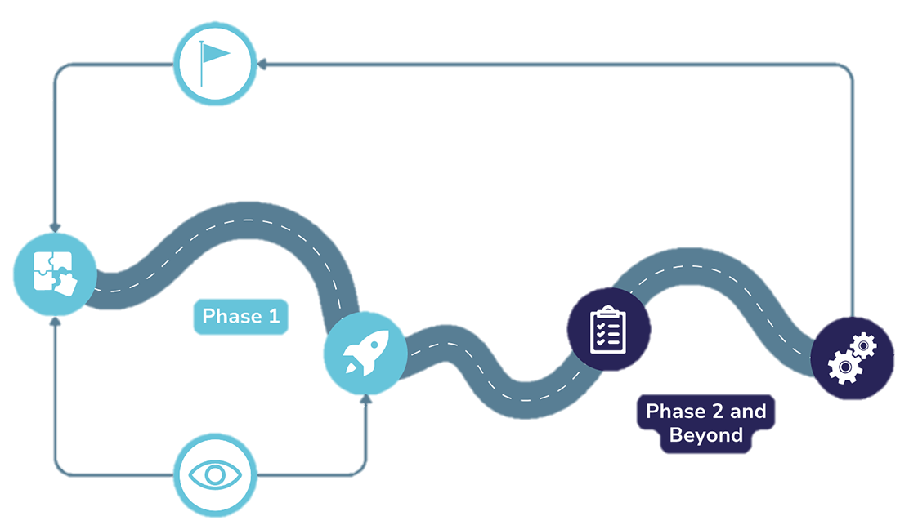

One Water Houston
We invite you to join us as we embark on our own One Water journey in Houston!
One Water Houston
Phase 1: Engagement
→ Understand needs and priorities of Houston as a whole (what is) and establish a vision for the future (what can be).
Future Planning and Analysis
→ Develop innovative solutions to bridge the gap between what is and what can be.
Implementation
→ Implement solutions developed in planning phases.

Click anywhere to return to the main topic.
We Need Your Help!
Community input is key to a successful One Water Houston plan.
- edit_square Share your thoughts via the One Water Houston Survey
- event View upcoming events
- travel_explore Visit our virtual open house
- public Explore the One Water Houston website to learn more about the initiative, discover where your water comes from, and test your water knowledge.
- chat Contact us with additional questions or comments.
Click anywhere to continue.
- City of Los Angeles. One Water LA 2040 Plan, Volume 1, Summary Report, April 2018.
- Green Portal. Alleys – From Grey Alleys to Green Alleys.
- City of Austin. Reuse in Water Forward.
Thank you!
You can return to this module at any time
on the One Water Houston website.